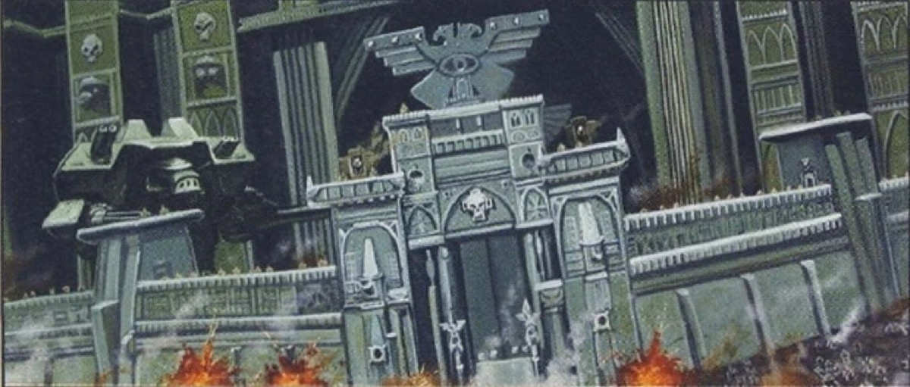

Titan Legions
| Titan Legions | |
|---|---|
| Collegia Titanica; the Adeptus Titanicus | |
The glyph of the Collegia Titanica: the war-cog of the Mechanicus over the sword of the Titan | |
| Type | War-engine orders of the Adeptus Mechanicus |
| Origin | The Age of Strife, on Mars; the Collegia was formed in the Great Crusade |
| Founders | The Triad Ferrum Morgulus: Legio Tempestus, Legio Mortis, Legio Ignatum |
| Allegiance | Cult Mechanicus and the Imperium; some Legios sided with the Traitors in the Heresy |
| Base | Each Legio on its own forge world or worlds |
| Command | A Grand Master, a Princeps Senioris of high rank; strategy rests with the forge lords |
| Divisiones | Militaris, Mandati, Telepathica, Investigatus |
| Engines | Warhound, Reaver, Warlord, Emperor and other classes |
| Size | A Legio may have from a dozen to over a hundred Titans |
| Notable Loyalist Legios | |
| Gryphonicus (War Griffons), Ignatum (Fire Wasps), Tempestus (Stormlords), Astorum (Warp Runners), Crucius (Warmongers), Atarus (Firebrands), Praesagius (True Messengers) | |
| Notable Traitor Legios | |
| Mortis (Death's Heads), Fureans (Tiger Eyes), Vulpa (Death Stalkers), Magna (Flaming Skulls), Audax (Ember Wolves), Suturvora (Fire Masters), Vulcanum I (Lords of Ruin) | |
The Titan Legions are the orders of the Collegia Titanica, the division of the Adeptus Mechanicus that builds and commands the Titans. A Titan is a bipedal war-engine as tall as a cathedral, armed with weapons that can level a city block and shielded against everything short of another Titan. The Mechanicus calls them god-engines and holds them to be incarnations of the Machine God. They are the heaviest weapons of the Imperium of Mankind short of a starship, and the Titan Legions are its most powerful armies.[1]
A Titan Legion, or Legio, is based on a forge world and answers to the lords of that world and to the Mechanicus. Its Titans are not commanded by any Imperial officer, not even a general of the Astra Militarum or a Chapter Master. They are lent to the Imperium's wars at the pleasure of the Mechanicus, and the right to commit them is among the strongest levers the Cult Mechanicus holds. Each Legio has its own heraldry, traditions, rivalries and doctrine, much as the Chapters of the Adeptus Astartes do.[1]
The Legios are older than the Imperium. They were formed on Mars in the Age of Strife, fought in the Great Crusade, and split in the Heresy (005–014.M31), when a number of them sided with the Warmaster and others held to the Emperor. The enmity born in that war has lasted ten thousand years, and the loyal Legios still fight the Traitor ones wherever they meet.[1]
History
[edit]Origins on Mars
[edit]The Titans first appeared in the Age of Strife. After the fall of the old human empire Mars was a ruin of dead machines and warring cults. The Tech-priests who gathered what knowledge remained into the first Cult of the Machine built their forge cities on its red deserts, and when a heretical caste of machine-wrights, the Cy-Carnivora, overran much of the planet with its hunger-engines, they answered with three great orders of war-engines. These were the Triad Ferrum Morgulus, the Legio Tempestus, the Legio Mortis and the Legio Ignatum. With them the Cy-Carnivora were destroyed, and the Titan Legion became the template on which all later ones were founded.[1]
The Legios fought as much against one another as against any enemy. Each served its own forge city, and in the long ages of Mars's civil wars the rivalries that were to bear such fruit in the Heresy were sown. The Legio Mortis fought the Legio Tempestus, and the Legio Ignatum fought both.[1]
The Great Crusade
[edit]When the Emperor came to Mars he was greeted as the Omnissiah, though a faction of the Cult Mechanicus rose against him. They were crushed, and the Treaty of Mars was sworn on the slopes of Olympus Mons. The Treaty gave the Mechanicum an alliance with Terra on terms that left the Cult its autonomy and the Titan Orders to the service of the Great Crusade.[1]
The Titans went out with the Legions. Their weapons and armour proved as devastating against recalcitrant human tyrants and xenos as they had against the Cy-Carnivora, and the Space Marines learned to take cover behind them. In the lands it conquered the Crusade found forge worlds founded by the Mechanicum's Long March in the Age of Strife, some of which had Titan Orders of their own. A few had fallen into barbarism and were destroyed. Most acknowledged Mars and were taken into the Imperium. Within a few decades of the start of the Crusade the Mechanicum had found or founded a score of Titan Orders, and by the end of the first century of the Crusade the Titan Orders had become standardised.[2]
The Fabricator-General of Mars decreed that the Titan Orders should form a single body, the Collegia Titanica, to preserve their doctrine and honours. The Collegia gained a powerful voice in the new Imperium. In the records of the Great Crusade and the Heresy the Titans are called the Legio Titanicus, a name by which they are still known in older Mechanicus documents.[1]
The Schism of Mars
[edit]
The Heresy found the Collegia divided. The Fabricator-General of Mars, Kelbor-Hal, who had been promised the secrets of the Standard Template Construct by Horus, threw in his lot with the Warmaster. He opened the Vaults of Moravec, which the Emperor had ordered sealed, and the forbidden knowledge in them infected the forge cities with a cogitator virus called scrap code. Titans of the Legio Agravides and the Legio Fortidus were destroyed when their reactors went critical in what the Mechanicus calls the Death of Innocence.[3]
The Martian civil war that followed, the Schism of Mars, split the Titan Legions. The Legio Mortis, whose Titans had been among the Mechanicum's oldest and proudest, led the Traitors, and the Legio Magna smashed the forge of Magos Mattias Kefra in the Madler Crater. The Legio Ignatum fought the Burning Stars to a standstill in the Athabasca Valles. The Legio Honorum, caught by the Legio Vulpa, lost nineteen Titans in its first hour. The last of the Loyalists on the red planet, the Legio Tempestus, fell unaware that most of its Titans elsewhere had already gone over to the Warmaster.[3]
The wars of the Heresy
[edit]The Titans took part in nearly every major battle of the Heresy. At Isstvan III the Legio Mortis, the Legio Audax and the Legio Vulpa walked unharmed through the firestorms of the virus-bombing that killed the Loyalist Astartes. At Isstvan V the Legio Atarus fought for the Loyalists and was destroyed by the Death's Heads. At Calth the Legio Suturvora betrayed its oath and fired on the Legio Praesagius, who remained loyal, in the moment of the Word Bearers' treachery. At Maerdan, in 008.M31, more than two hundred Titans fought, the Loyalist Legio Gryphonicus, Legio Metalica and Legio Destructor against the Traitor Legio Mortis, Legio Argentum and Legio Vulturum. The hatred between the War Griffons and the Death's Heads that began at Maerdan has never died.[3]
At Molech in 009.M31 the Traitor Legios aided Horus in the capture of the world's Warp gate. At Tallarn in 010–012.M31 the Legio Gryphonicus fought in the largest armoured engagement in the history of Mankind. Across the Belt of Iron the Cataclysm of Iron set the forge worlds against one another, and at Ollanz in 012.M31 the Legio Astorum destroyed the Legio Fureans at Borman IV.[3]
The Loyalist Titan Orders were gathered into the Adeptus Titanicus in 012.M31, at the time the Adeptus Mechanicus was formally founded on Terra under the Fabricator-General Zagreus Kane. The grand masters of the Loyalist Legios joined, and the new body was made part of the Mechanicus under the Fabricator-General's authority.[3]
The Siege of Terra
[edit]When the Warmaster's host landed on Terra in 014.M31 the Traitor Titans came with it. The Legios Mortis, Vulpa and others walked on the walls of the Imperial Palace. Horus gave the Legio Mortis the honour of breaking the wall, and the Death's Heads accomplished it in an evening, at the cost of more than thirty Titans, against defenders that included the Loyalist Legio Ignatum. Titans of the Loyalist Legios held the inner defences until the Emperor's duel with Horus ended the Siege.[3]
Ten thousand years
[edit]In the Great Scouring the Loyalist Legios pursued the Traitor Titans into the Eye of Terror, and since then they have kept watch over its edge. The Divisio Militaris is said to keep over a hundred Legios on the borders of the Eye. In the 41st millennium Titans fought at the Siege of Vraks, where the Legio Astorum and the Legio Vulcanum I met, in the Badab War, where the Legio Crucius broke the resistance at Badab Primaris, and in the Third War for Armageddon, where the Legio Crucius, the Legio Ignatum and the Legio Metalica fought the Ork Gargants of Ghazghkull. At Cadia, in the Thirteenth Black Crusade, Titan Legions transferred from across the Imperium stood with the defenders.[4]
In the Era Indomitus the Collegia has committed more of its strength than at any time since the Heresy. The Legios are among the forces that Guilliman has used to hold the new Imperium's borders, and the Mechanicus has sent them where it chooses.[5]
Organisation
[edit]Legios and divisiones
[edit]
The Collegia has four divisions, the divisiones. The Divisio Militaris is the fighting arm and holds nearly all the Legios. The Divisio Mandati, the Executive Orders, travels in vast temple-ships that carry Emperor Titans, with servants of the Arbites, the Inquisition and other adepta aboard, and brings the Pax Imperia to isolated worlds. The Divisio Telepathica is small and secretive and is said to operate psychic Titans against the forces of Chaos. The Divisio Investigatus, the Research Orders, designs and tests new engines, and favours the Warlord as its test-bed. Each Legio is a self-contained order headed by a Princeps Senioris of the rank of Grand Master.[1]
A Legio's size varies from a dozen engines to well over a hundred. Losses take solar decades to replace, since the building of a Titan is among the longest and costliest of the Mechanicus's works, and Legios have been reduced to a handful of survivors and been kept in being for the sake of their name.
Command and operations
[edit]Titans cannot be given orders by Imperial commanders. The movement of a battlegroup is decided by its Princeps Senioris, by the senior magos of the Mechanicus who accompanies it or by the lords of its home forge. The magos may order a retreat to save the engines. The one exception is a full Inquisitor, who may commandeer Titans already on the field and requisition a battlegroup from a forge world, but who does so at some risk of offending the Mechanicus.[1]
Titans fight in groups called maniples. A maniple consists of three to five Titans, five by tradition, with the Warhounds scouting and marking targets ahead of the heavier engines. The commonest, the Axiom, is led by a Warlord, with two Reavers behind and two Warhounds ranging ahead. A battlegroup, the whole of a Legio's strength in a theatre, may be made wholly of maniples, which break into demi-maniples when forces must be divided. The Mechanicus has recorded many standard patterns, among them the Myrmidon, Venator, Corsair, Janissary and Regia.[1]
Titans and crews
[edit]
Titans are of several classes. The Warhound is the smallest and fastest and is used to scout and flank. The Reaver is a medium battle Titan armed with a variety of weapons. The Warlord is the commonest of the great battle Titans, the main weapon of the Imperium's war. The Emperor is the largest and most powerful, the size of a great cathedral, and its appearance on a battlefield has become uncommon. Each class has many patterns, some of which are only built on a single forge world, and the Mechanicus keeps detailed records of the patterns, though it has lost the means to make some of them.[4]
A Titan is a god-engine with a spirit of its own. It is piloted by a Princeps, who is linked to its machine spirit by a neural interface, and is helped by one or more Moderati who control its weapons and its reactor. Larger Titans have a larger crew, including tech-priests who tend the plasma reactor and the machine spirit. A Princeps is a figure of pride, whose battle record is displayed on banners that hang from the Titan's frame, and many of the best of them are held in reverence by the Legio.[1]
The Titan's armament is built around weapons of great size, among them gatling blasters, plasma annihilators, volcano cannon, laser blasters, missile launchers and the apocalypse missile launcher. Its protection is thick armour and a stack of void shields. Few things in the Imperium can match a Titan in a gun duel, and no army can match a Legio.
Notable Legios
[edit]| Legio | Nickname | Notes |
|---|---|---|
| Legio Tempestus | Stormlords | One of the Triad Ferrum Morgulus. Loyal; destroyed on Mars in the Schism. |
| Legio Mortis | Death's Heads | One of the Triad. Led the Traitors and broke the Palace wall. |
| Legio Ignatum | Fire Wasps | One of the Triad. Loyal. Rivals of the Death's Heads since the Age of Strife. |
| Legio Gryphonicus | War Griffons | Loyal; fought at Paramar, Maerdan, Molech and Tallarn. |
| Legio Astorum | Warp Runners | Loyal; destroyed the Tiger Eyes at Borman IV. |
| Legio Crucius | Warmongers | Loyal; known as city-breakers and world burners. |
| Legio Fureans | Tiger Eyes | Traitor. |
| Legio Suturvora | Fire Masters | Traitor; betrayed the True Messengers at Calth. |
Relations with other institutions
[edit]- Adeptus Mechanicus
- The Titan Legions are the great military instrument of the Mechanicus and its political strength.
- Imperial Knights
- The Knight houses of the Knight worlds fight beside the Legios, and are held by the Mechanicus to be their lesser kin.
- Ecclesiarchy
- The Ministorum covets the Titans for its Wars of Faith and is rarely granted them.
- Astra Militarum
- The Guard prizes the support of Titans, and cannot command them.
Timeline
[edit]| Date | Event |
|---|---|
| c. 025.M30[a] | The Triad Ferrum Morgulus (the Legio Tempestus, Legio Mortis and Legio Ignatum) is formed on Mars and destroys the Cy-Carnivora. |
| 712.M30 | The Emperor comes to Mars, and the Treaty of Mars is sworn on the slopes of Olympus Mons. |
| c. 798.M30 | The Titan Orders go out with the Great Crusade and fight beside the Space Marine Legions. |
| c. 898.M30[b] | By the end of the first century of the Great Crusade, the Titan Orders are standardised, and the Collegia Titanica is formed. |
| 005.M31 | Kelbor-Hal opens the Vaults of Moravec, and the Schism of Mars splits the Titan Legions. |
| 008.M31 | More than two hundred Titans fight at Maerdan. |
| 009.M31 | The Traitor Legios aid Horus at Molech in the capture of the world's Warp gate. |
| 010–012.M31 | At Tallarn the Legio Gryphonicus fights in the largest armoured engagement in the history of Mankind. |
| 012.M31 | At Ollanz the Legio Astorum destroys the Legio Fureans at Borman IV. The Loyalist Titan Orders are gathered into the Adeptus Titanicus. |
| 014.M31 | At the Siege of Terra, the Legio Mortis breaks the wall of the Imperial Palace. |
| 014–021.M31 | In the Great Scouring, the Loyalist Legios pursue the Traitor Titans into the Eye of Terror. |
| 998.M41 | Titans of the Legio Crucius, the Legio Ignatum and the Legio Metalica fight Ghazghkull's Gargants in the Third War for Armageddon. |
| 999.M41 | At Cadia, in the Thirteenth Black Crusade, Titan Legions transferred from across the Imperium stand with the defenders. |
| c. 012.M42[c] | The Collegia commits more of its strength than at any time since the Heresy to hold the borders of the reconquered Imperium. |
See also
[edit]Notes
[edit]References
[edit]- ^ a b c d e f g h i j k Annals of the Collegia Titanica (M31, restored M33). Adeptus Titanicus, Mars.
- ^ Sindermann, Kyril (c. 004.M31). Remembrances of the 63rd Expedition. Remembrancer Order.
- ^ a b c d e f Chronicles of the Heresy (sealed). Logos Historica Verita, Terra.
- ^ a b Codex Imperialis (rev. 980.M41). Adeptus Terra.
- ^ Records of the Indomitus Crusade (ongoing). Office of the Lord Commander.